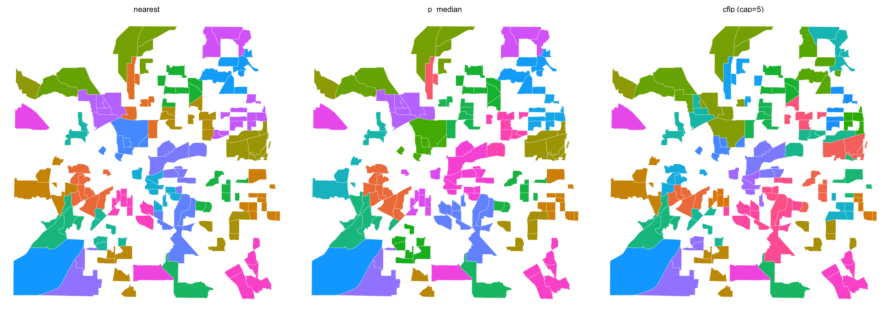

allocate_zones() partitions geographic units into zones, each with a center, such that no unit exceeds max_distance from its center. It automatically discovers the minimum number of centers via LSCP, then assigns units using one of three methods:
cat(sprintf("%-25s %10.3f %10.3f %10.3f\n", "Solve time (s)", m1$solve_time, m2$solve_time, m3$solve_time))
Solve time (s) 0.007 0.044 56.575
Mapping
map_near <- tarrant |>left_join(st_drop_geometry(result_near$zones) |>select(GEOID, zone = .center), by ="GEOID") |>mutate(method ="nearest")map_opt <- tarrant |>left_join(st_drop_geometry(result_opt$zones) |>select(GEOID, zone = .center), by ="GEOID") |>mutate(method ="p_median")map_cap <- tarrant |>left_join(st_drop_geometry(result_cap$zones) |>select(GEOID, zone = .center), by ="GEOID") |>mutate(method ="cflp (cap=5)")bind_rows(map_near, map_opt, map_cap) |>mutate(method =factor(method, levels =c("nearest", "p_median", "cflp (cap=5)"))) |>ggplot() +geom_sf(aes(fill =factor(zone)), color ="white", linewidth =0.1) +scale_fill_discrete(guide ="none") +facet_wrap(~method, ncol =3) +theme_void()

Zone sequencing
When sequence = TRUE, zones and tracts are ordered via TSP for geographic routing. Inter-zone distances use minimum pairwise distance between zone members (matching the surveyzones approach). Within each zone, tracts are oriented so the entry tract is closest to the previous zone’s exit.
result_seq <-allocate_zones(zones_sf, max_distance =5, method ="p_median",weight_col ="population",cost_matrix = dm, sequence =TRUE, verbose =TRUE)# Show first 15 tracts in visit orderseq_df <-st_drop_geometry(result_seq$zones) |>select(GEOID, .center, .zone_order, .tract_order) |>arrange(.zone_order, .tract_order)head(seq_df, 15)